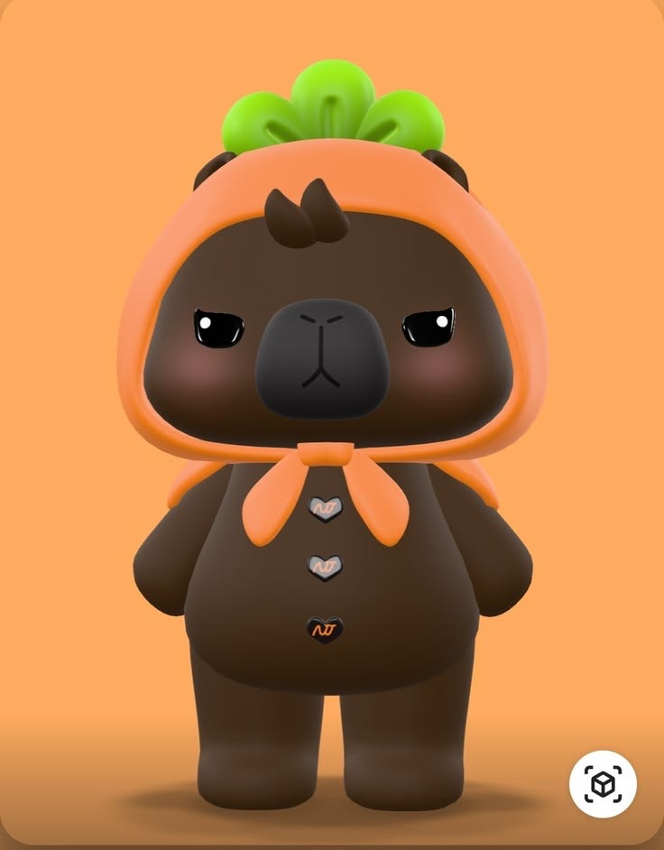

Jook-Kroo is the official mascot for the popular Thai BL (Boys’ Love) duo Net Siraphop and JJ Ratchapon (NetJJ). He was introduced in April 2026 as part of a broader wave of Domundi mascot releases, each representing different artists within the fandom. Jook-Kroo is designed as an adorable chocolate-brown capybara, often seen wearing a soft, fuzzy orange carrot-shaped hoodie, which has become his most recognizable feature. The carrot theme is a key part of his visual identity, giving him a warm, playful, and instantly recognizable aesthetic. Jook-Kroo embodies a calm and comforting presence, much like a capybara’s naturally relaxed demeanor. He is described as gentle, well-behaved, and quietly cheerful, often “just chilling” in a peaceful state rather than being overly energetic or chaotic. Despite his simplicity, his vibe carries a subtle cuteness similar to a bunny resting in a carrot garden—soft, cozy, and heartwarming. This balance of calmness and charm makes him a symbolic comfort figure within the NetJJ fandom, often used in lighthearted content and affectionate fan interpretations.